Внутренняя презентация · июль 2026
Обзор для всей компании — простым языком. Данные Similarweb (апр–июнь 2026), сайты конкурентов, цены и каналы привлечения. Baseline: test2.biometric.vision
Biometric.Vision · test2
Канон — test2.biometric.vision/ru. Старый global biometric.vision — только для цифры трафика Similarweb (19 тыс.), не для текстов на сайте.
| Старт | 500 полных KYC/мес бесплатно — 1 год |
| Рост | $0.33 за проверку · без минимума |
| Enterprise | Установка на сервере клиента · SLA · white-label |
$0.33 = уровень Didit. В переговорах — качество, поддержка, кейсы в СНГ, а не только цена.
Главные выводы
Similarweb · апр–июнь 2026 · Worldwide
Persona — 46,3 млн на карту не ставим: Similarweb считает переходы из встроенных форм на чужих сайтах, цифра завышена.
Similarweb · апр–июнь 2026
11 конкурентов + Biometric. Persona показан отдельно — сравнивать с остальными некорректно: на их домен попадают пользователи из встроенных форм на чужих сайтах.
Persona (46,3 млн) — отдельно, не сравниваем. Длина полос — логарифмическая шкала.
Similarweb · апр–июнь 2026
Два типа лидеров: сильный бренд (много прямых заходов) и через клиентов (много переходов с сайтов компаний, которые встроили KYC).
Что ищут в Google · Similarweb Search · 3 мес · 11 конкурентов
🔍 SEO: fake id (3,9%) · winzir (3,5%) · kyc verification (1,6%) · crypto friendly countries (1,1%)
💰 Реклама: kyc (6,4%) · persona (5,8%, conquest) · seon (2,7%, conquest) · lexisnexis (2,6%, conquest)
Лидер трафика. Рекламу льёт на защиту бренда и перехват persona/seon (~$361K/3 мес только на главную).
🔍 SEO: guess my age (9,3%) · age estimator (8,2%) · how old do i look (5,3%) · fake id (3,6%)
💰 Реклама: sumsub (22,5%, conquest) · incode (13,1%, conquest) · onfido (9,6%, conquest) · legitimuz (10,3%, conquest)
Топ-SEO — вирусная «угадай возраст», но это не покупатели KYC. Реклама почти вся conquest по конкурентам.
🔍 SEO: address guide KR (7,2%) · voice fraud RU (2,0%) · pakistan id card (1,9%) · roblox age verify RU (1,7%)
💰 Реклама: sumsub (4,4%, conquest) · stripe (2,4%) · yoti (2,3%, conquest) · veriff (1,8%, conquest)
Ловит длинный хвост на RU/KR/urdu + перехват sumsub. Делает лендинги /switch/sumsub-alternative.
🔍 SEO: fansly (45,2%) · fein (1,8%) · age verification (1,0%) · best id verification software (1,0%) · shell companies (0,8%)
💰 Реклама: в основном по своему бренду (~$4,3K)
Почти весь трафик — одна тема «fansly / проверка возраста» (adult-ниша). Узко, но горячо.
🔍 SEO: слабая — 64% поиска идёт через рекламу (facecheck id, yoti age verification)
💰 Реклама: yoti (3,8K, conquest) · facecheck id (2,6K) · persona (1,5K, +5000%, conquest) · veriff (1,1K, conquest) — 100% через рекламу
Покупает трафик деньгами, очень много conquest. Сильный бренд в Бразилии (Search 52,7K, +21% YoY).
🔍 SEO: nfc tag (2,6%) · id verification (2,5%) · virginia adult sites (1,7%) · ein verification (1,6%)
💰 Реклама: onfido (100% бюджета, conquest)
Весь рекламный бюджет — на перехват одного бренда onfido. Основной рост — на органике и iGaming.
🔍 SEO: aretheyregistered.ca (1K) · authenticator app (810)
💰 Реклама: kyc (590) · persona (470, новое, conquest) · veriff (360, +227%, conquest)
Сильный бренд (70% ищут по названию). Реклама — точечный conquest по persona/veriff (Search 91,9K).
🔍 SEO: kyc solutions and pricing (230) · cdd due diligence (180) · aml crypto (160) · age verification face (150) · visage age rating (150)
💰 Реклама: почти нет (1,6% поиска · $0 PPC)
Чистый SEO-рост под запросы малого бизнеса, без рекламного бюджета — модель, ближайшая к нам.
🔍 SEO: shufti pro (бренд) · kyc verification · shufti kyc
💰 Реклама: sumsub (3,6%, conquest) · kyc verification (2,1%) · yoti (conquest) · onfido (conquest)
В основном ищут по бренду (UK). Рекламу нарастили ×9 за год — перехват sumsub/yoti/onfido.
🔍 SEO: confidential document processing · ekyc · roblox age verify
💰 Реклама: минимальная (~$2,2K)
Инженерный SEO вокруг проверки документов. Рекламу почти не покупают — техническая аудитория.
🔍 SEO: onfido (conquest) · kyc · kyc verification · kyc compliance meaning
💰 Реклама: onfido (conquest) — бюджет $864K/кв, крупнейший на рынке
Огромный рекламный бюджет + сильнейший бренд (75% ищут по названию). Много conquest по onfido.
Как конкуренты находят новых клиентов · простыми словами
Важно не перепутать два разных потока трафика:
1. Трафик «через клиентов» — это обычные люди, которые проходят проверку на сайтах компаний, уже купивших KYC. Это не новые покупатели, а конечные пользователи чужих сервисов. Много такого трафика ≠ много продаж.
2. Привлечение новых компаний-покупателей — это то, как вендор находит новый бизнес: реклама, статьи и SEO, отзывы на G2, вебинары, партнёры, бесплатный тариф. Ниже — как именно это делает каждый, человеческим языком.
Работает как контент- и бренд-машина. Ведёт ~170 рекламных объявлений в Meta, пишет гайды по iGaming и крипте, попал в отчёты Gartner, проводит вебинары и запустил обучающую «Sumsub Academy». Плюс Partner Hub — 400+ интеграторов сами приводят клиентов.
Итог: 72% людей заходят напрямую (уже знают бренд), рассылки дают ещё ~6%.
Сделал вирусные бесплатные игрушки — «угадай возраст по фото». Они дают ~9% трафика, но это случайные люди, а не покупатели KYC. Реальные продажи идут через компании, которые уже встроили Veriff. В соцсетях делает ставку на LinkedIn.
Итог: треть трафика (33%) — с сайтов клиентов, а не новые лиды.
Много платной рекламы + сильный бренд в Латинской Америке. Тратит на Google Ads больше всех — ~$116,8 тыс./квартал, в т.ч. по названиям конкурентов (yoti, persona, veriff). В Бразилии их хорошо знают.
Итог: 84% заходят напрямую — узнаваемость в LATAM.
Ниша «проверка возраста» для adult-платформ. Заточились под запросы вроде «fansly» (45% органики) и лендинги про age verification. Растут за счёт узкой, но горячей ниши.
Итог: почти половина трафика с клиентов — adult-сайты.
Классический «взрослый» enterprise-маркетинг. Ставка на статьи, whitepaper'ы, попадание в отчёты Gartner/Forrester и конференции. Продают крупным корпорациям долгим циклом.
Итог: реклама ~$18 тыс., бренд узнаваем (70% ищут по названию).
Бренд в iGaming + хорошие отзывы. 71% заходят напрямую, рейтинг 4,9★ на G2. Модель «платишь только за одобренную проверку». Платной рекламы мало — ~49 объявлений в Google (Transparency Center); ставка на органику и встраивание у букмекеров.
Итог: недорогой рост без больших рекламных бюджетов.
SEO для малого бизнеса + дешёвый вход. Пишут статьи под запросы «цены на KYC», «AML для крипты» — органика выросла +492% за год. Вход $99/мес, много мелких финтех-встраиваний. Платной рекламы немного — ~40 объявлений в Google (Transparency Center), ставка на органику.
Итог: наш сегмент по размеру — конкурируют ценой и контентом.
Продукт-крючок (PLG) + активная платная реклама. $0,33 за проверку, 500 бесплатных в месяц, поддержка MCP; растят dev-сообщество на YouTube. «Бесплатно» — это про продукт, а не про маркетинг: ~300 объявлений в Google (Transparency Center) — перехват брендов (sumsub) и LATAM на испанском ($0,15/проверка).
Итог: растут и ценой/продуктом, и платным поиском — не только органикой.
Средний UK-бренд на прямых заходах — но с самой большой рекламной активностью. 76% трафика — прямые заходы (знают бренд). При этом крутят ~900 объявлений в Google (Transparency Center — больше всех в подборке), в т.ч. перехват брендов конкурентов (sumsub, onfido). Клиенты — в основном gaming и крипта.
Итог: узнаваемость в UK/APAC + встраивание у gaming + агрессивный платный поиск.
Инженерный SEO вокруг документов. Растут на органике по «forensic / document verification», продают SDK для проверки документов (часто on-prem). Аудитория — инженеры и госструктуры (много desktop-трафика), а не классические покупатели KYC-SaaS.
Итог: смежный рынок, техническая аудитория, продажи через экспертный контент.
Сильнейший бренд + огромная реклама + продукт для разработчиков. 75% ищут по названию, PPC ~$864 тыс./кв (в разы больше всех). Встроены у big-tech (GitHub, DoorDash, Twitch, OpenAI, Roblox). Authority-страница Gartner, dev/SDK-подход.
Итог: enterprise US, тянут и брендом, и деньгами, и продуктом для разработчиков.
Что есть: 11 отраслей, MCP, кейсы в СНГ.
Проблема: сайт даёт всего 19K визитов и 0% поискового трафика — нас просто не находят в Google.
Что нужно: контент/SEO, партнёры, работа с отзывами и разбор выигранных/проигранных сделок в CRM.
В каких сферах сидят клиенты конкурентов · Similarweb
Таблица показывает, в каких сферах у каждого конкурента больше всего клиентов. Так видно, за какие ниши они борются — и какие свободны для нас.
| Отрасль (простыми словами) | Sumsub | Veriff | Didit | iDenfy | Ondato | ComplyCube |
|---|---|---|---|---|---|---|
| Онлайн-игры и азартные игры | ✅✅ 7–14% | ✅ | ✅✅ 9% | ✅ | ✅ | ✅ |
| Криптовалюты и финтех | ✅ | ✅ | ✅ | ✅ | ✅ | ✅ |
| Adult-платформы (18+) / проверка возраста | — | ✅ | ✅✅ | ✅ | ✅✅ 48% | — |
| Букмекеры и ставки | ✅ 6% | ✅ | — | ✅✅ | ✅ | — |
| Биржи и трейдинг | — | ✅✅ 29% | ✅ | — | — | — |
| Проверка людей / гос-данные | — | — | ✅✅ 14% | — | — | — |
| Банки и госуслуги | ✅ 4% | ✅ | — | ✅ | ✅ | ✅ |
Sumsub и Veriff — из LinkedIn (деловая сеть). Didit — из YouTube (аудитория разработчиков). У Ondato «37% соцсети» — на самом деле встроенная проверка на adult-сайтах, а не реклама в соцсетях.
Банки Казахстана и России, такси, средний бизнес. Не идём в adult и «проверку людей». Наши козыри: установка на своём сервере, поддержка MCP и цена $0,33.
Публичные тарифы · июль 2026
Полная проверка = документ + живое лицо + сверка. Состав пакетов у разных компаний отличается.
| Компания | За проверку | Минимум / мес | Бесплатный старт |
|---|---|---|---|
| Biometric (test2) | $0.33 | нет | 500/мес × 1 год |
| Didit | $0.33 | нет | 500/мес навсегда |
| Veriff | от $0.80 | $49/мес | 15 дней trial |
| Sumsub | от $1.35 | $149/мес | 14 дней |
| iDenfy | от $1.35 | от $135/мес | 14 дней |
| Persona | по запросу | от $250/мес | программа для стартапов |
| ComplyCube | от ~$99/мес | пакет | trial |
Battlecards · все 11 конкурентов · Similarweb визиты 3 мес
Продают: KYC+AML+KYB, 4000+ клиентов, Partner Hub 400+.
Слабые: $1.35+, мало СНГ, сложность.
Мы: Liveness tiers · MCP · on-prem · CIS кейсы.
Продают: age verification (fansly), adult embed, №2 трафик.
Слабые: 48% referral = adult, узкий ICP.
Мы: Banking/mid-market, не adult niche.
Продают: LATAM brand, Brazil #1, PPC $116,8K/кв.
Слабые: 65% non-branded, referral 64% adult.
Мы: СНГ · on-prem · не только paid.
Продают: $0.33, MCP, 500 free, PLG.
Слабые: adult/records ICP, слабее banking СНГ, нет G2.
Мы: Regulated banking · качество · поддержка.
Продают: 12 500 документов, G2 лидер, video-first.
Слабые: 33% embed-зависимость, viral age SEO ≠ KYC.
Мы: Re-auth такси · CIS · честные цифры.
Продают: 4.9★ G2, pay-per-approved, iGaming.
Слабые: допы liveness/AML, средний tier.
Мы: Liveness в базе · banking platform.
Продают: 76% direct UK, in-house full stack.
Слабые: gaming referral, средний tier.
Мы: Banking · liveness · CIS кейсы.
Продают: enterprise SEO inbound, Fortune 500, branded 70%.
Слабые: дорого, медленный sales cycle.
Мы: Быстрый onboarding · $0.33 · СНГ.
Продают: forensic/doc SEO, desktop 52%, on-prem.
Слабые: смежный (не чистый KYC SaaS).
Мы: KYC + liveness + banking workflow.
Продают: SEO SMB +492% YoY, entry $99/мес, 34% embed.
Слабые: малый масштаб, thin liveness.
Мы: Наш сегмент по размеру — цена + on-prem.
Продают: enterprise US, Gartner leader, dev/SDK embed (github, doordash, twitch). Branded 75%, PPC $864K/кв.
Слабые: $250/мес × 12 контракт; *widget inflation — визиты не 1:1.
Мы: Mid-market СНГ без годового контракта · on-prem.
* Persona 46M — widget/SDK inflation, не сравнивать 1:1 по визитам. Порядок карточек — по трафику Similarweb.
Где мы сейчас · biometric.vision · Similarweb, 3 мес
Честная картина: Similarweb нас почти не видит. Это не плохо — это чистый лист с огромным потенциалом. Конкуренты получают 100 тыс.–2 млн поисковых визитов в квартал, мы — около нуля.
| Показатель | Значение |
|---|---|
| Поисковый трафик | ≈0 (ниже порога оценки) |
| Ключевых слов отслеживается | 56 (+133% за год) |
| В топ-3 Google | 1 запрос |
| Расходы на рекламу | $0 |
| Брендовый / небрендовый | 22% / 78% |
| Главный регион | Россия |
Всё — бесплатный поиск, рекламы нет:
Платных лендингов нет. Тематика узкая и RU-ориентированная.
Ровно по двум главным болям рынка из отзывов G2: цена и сложность внедрения.
1) SEO по словам категории (kyc, id/age verification, liveness) — у нас 56 ключей против тысяч у конкурентов. 2) Программа отзывов G2 — у лидеров 40–208, у нас 0 → без этого не попадаем в шортлист. 3) Conquest-лендинги «vs Sumsub/Veriff» и «X-alternative» (приём Didit). 4) On-prem + MCP — уникальный угол с почти нулевой конкуренцией.
2023 референс Алибека + Similarweb 2026
| Компания | 2023 / старт | 2026 (3 мес) | Динамика | Сигнал |
|---|---|---|---|---|
| Didit | старт 2023 | 2,33 млн | ×∞ | YC · $3,3M ARR · PLG $0,33 |
| Ondato | ~1M est. | 4,0 млн | ≈×4 | Search +479% YoY · fansly SEO |
| ComplyCube | малый base | 240K | +492% org YoY | SMB embed · kyc pricing SEO |
| Incode | LATAM рост | 2,35 млн | ↑ brand | PPC $116,8K/кв · Brazil #1 |
| Veriff | ~2,0 млн | ~2,0 млн | ≈ flat | Стабилен · referral 33% |
| Sumsub | лидер | 5,91 млн | ↑ #1 | Partner Hub · Meta 170 ads |
Отзывы клиентов · G2 / Capterra / Trustpilot · лето 2026
Отзывы на G2 — это «сарафан» в B2B: покупатели читают их перед выбором. Показываем рейтинг, сколько отзывов (чем больше — тем весомее) и за что хвалят / ругают.
| Компания | G2 | Отзывов | За что хвалят | На что жалуются |
|---|---|---|---|---|
| iDenfy | 4.9 | 208 | Поддержка №1, оплата только за одобренные проверки | Дашборд перегружен на больших объёмах |
| ComplyCube | 5.0 | ~68 | Всё-в-одном KYC+AML за $99, no-code | Отчёты только через API, не в интерфейсе |
| Incode | 5.0 | ~52 | Точность биометрии, проактивная поддержка | Цена «по запросу», сложная интеграция |
| Regula | 4.9 | 34 | Экспертиза документов, база шаблонов ID | Узкая ниша (форензика) |
| Sumsub | 4.6 | ~112 | Лучшее распознавание фрода, всё-в-одном | Сложно освоить, ложные срабатывания, простои |
| Veriff | 4.5 | 56 | Видео-проверка, API-документация, 190+ стран | Дорого для малых, трение камеры |
| Shufti | 4.3 | 47 | Глобальное покрытие, оркестрация | Разовый setup ~$2 500 |
| Persona | 4.3 | 43 | Гибкие настройки, FedRAMP | Нужны инженеры, вход $250/мес |
| Jumio | 4.1 | 16 | Enterprise-масштаб (1B+ проверок) | Цена непрозрачна, отказы селфи, Trustpilot 1.6 |
| Ondato | ~4.7 | ~96 | Быстрый комплаентный онбординг | — |
| Didit | нет | 0 | — | Нет отзывов на G2 (новый игрок) |
Хвалят: качество поддержки, простую интеграцию, «всё-в-одном» KYC+AML, понятную цену. Ругают: непрозрачную/дорогую цену (Jumio, Incode, Sumsub, Persona), сложность внедрения, ложные срабатывания.
1) Главная боль рынка — цена: наши прозрачные $0,33 бьют точно. 2) Вторая боль — сложность: наш быстрый старт + установка на своём сервере + MCP. 3) Отзывы на G2 — это ров: у лидеров 40–208, у нас 0 → нужна программа сбора отзывов, иначе нас не будет в шортлисте.
С кем конкуренты делят аудиторию · Similarweb «Похожие сайты» · 3 мес
Similarweb показывает, какие сайты посещают одни и те же люди. Если аудитории двух сервисов сильно пересекаются — значит, покупатель сравнивает их в одном коротком списке (это прямые заменители). Ниже — что мы из этого узнали.
У 10 из 11 конкурентов в топе «похожих» встречаются одни и те же компании. Это прямые заменители — с ними мы конкурируем за одного и того же покупателя.
| Компания | Кто это / чем берёт |
|---|---|
| Jumio | Enterprise-гигант, Fortune 500 |
| Sumsub | Лидер по трафику, KYC+AML+KYB |
| Persona | Dev/SDK, клиенты big-tech (OpenAI, Roblox) |
| Incode | Биометрия, сильны в Латинской Америке |
| iDenfy | iGaming, отличные отзывы |
| Yoti | Проверка возраста (Великобритания) |
| Trulioo | Глобальные данные, проверка бизнеса (KYB) |
| AU10TIX | Enterprise-IDV (Израиль) |
| MetaMap | IDV для развивающихся рынков |
| Vouched · Notabene · Intellicheck | US-IDV · crypto travel-rule · валидация ID в США |
Сильно пересекаются с нашей категорией → добавить в мониторинг:
| AU10TIX | enterprise IDV |
| Yoti | age verification |
| Trulioo | KYB / данные |
| MetaMap | IDV emerging markets |
| Vouched | healthcare/US IDV |
| Notabene | crypto travel-rule |
| Intellicheck | US ID validation |
Didit попал в списки «похожих» у Sumsub, Veriff, iDenfy, Incode, Jumio, Persona — рынок уже считает его ровней (хотя ему всего пара лет).
При этом у Didit свой под-кластер — liveness / eID / для разработчиков:
Это ближе всего к нашему техническому позиционированию (on-prem / SDK).
Оговорка: в trial точные проценты пересечения и affinity-скоры закрыты (нужен платный тариф). Показан порядок похожести как приближённая сила пересечения.
За что борются в Google · Similarweb Search · 3 мес
«Keyword-gap» = разрыв по словам: по каким запросам находят конкурентов, а нас — нет. Это готовый список, что забирать в наше SEO и в рекламу. Слова делятся на два типа: общий спрос категории и перехват чужих брендов.
Общий спрос — по ним ищут решение, а не конкретный бренд. Сюда идём SEO-контентом (статьи, лендинги).
| Запрос | Смысл |
|---|---|
| kyc · kyc verification | ядро категории |
| id verification | проверка документов |
| age verification · guess my age | проверка возраста (18+) |
| fake id | защита от поддельных ID |
| aml · kyc pricing | комплаенс и цены |
| liveness · nfc id | технологии проверки |
Реклама «в лоб» по названиям конкурентов: человек ищет чужой бренд — показывают своё объявление.
| Кто платит | По каким брендам бьёт |
|---|---|
| Didit | sumsub, yoti, iDenfy |
| Veriff | sumsub, incode, onfido |
| Incode | yoti, persona, veriff |
| Jumio | persona, veriff |
| Sumsub | persona |
| iDenfy · Persona | onfido |
Didit делает страницы вида didit.me/switch/sumsub-alternative (перехват клиентов Sumsub) и крутит на них рекламу, плюс отдельные лендинги под phone / id / email-verification. Дёшево и эффективно — поиск вырос на 297% за год.
1) SEO по «горячим» словам категории (kyc, age/id verification, liveness). 2) Conquest-реклама по лидерам: sumsub / veriff / persona / onfido alternative. 3) Лендинги «Biometric.Vision vs Sumsub/Veriff» с упором на цену $0,33 и on-prem. 4) Уникальный угол — on-prem + MCP: по этим словам конкуренции почти нет.
Источник: топ небрендовых запросов и платные лендинги (Similarweb Search Overview). Полные таблицы топ-25 в trial частично закрыты.
Что продают конкуренты · Similarweb · денежные страницы · 3 мес
Самые «дорогие» посадочные страницы конкурентов (куда они льют рекламу) показывают, что для них главное — и какие приёмы копировать нам.
| Страница | Реклама, 3 мес |
|---|---|
| главная (защита бренда) | $360,9K |
| /switch (перехват persona) | $41,3K |
| /id-verification | $3,1K |
| /tr (Турция) | — |
| Страница | Реклама, 3 мес |
|---|---|
| /veriff-solutions | $65,1K |
| /brand-comparison/veriff-vs-sumsub | $31,8K |
| /brand-comparison/veriff-vs-onfido | $12,1K |
| /es/ · /pt-br/ (локализация) | — |
| Страница | Реклама, 3 мес |
|---|---|
| /lp/contact (демо-захват) | $372,6K |
| /gartner-magic-quadrant (аналитика) | $223,7K |
| /lp/verification | $52,1K |
| /lp/identity-verification | $29,6K |
| Страница | Реклама, 3 мес |
|---|---|
| /products/phone-verification | $868 |
| /switch/sumsub-alternative | $1,2K |
| /products/id-verification | $490 |
| /products/email-verification | $143 |
1) Comparison / switch-страницы — «vs Sumsub», «X-alternative» (есть у Veriff, Sumsub, Didit). 2) Защита бренда рекламой. 3) Authority-страница (Persona — Gartner). 4) Локализация (/es, /pt-br, /tr). 5) Отдельная LP на каждый продукт.
1) «Biometric.Vision vs Sumsub/Veriff» и «X-alternative» с упором на $0,33 и on-prem. 2) /on-premise и /mcp-integration — уникальный угол без конкуренции. 3) Продуктовые LP: сравнение лиц, liveness, KYC. 4) Локализация RU + EN.
Google Ads Transparency Center · adstransparency.google.com · регион «Везде» · снимок 13.07.2026
Число активных объявлений (вариантов рекламы) в публичной библиотеке Google по каждому домену. Все 11 конкурентов рекламируются платно. У нас — 0.
Миф «растут бесплатно / на органике» не подтверждается: даже Didit (ставка на бесплатный продукт) ведёт ~300 объявлений — выкуп бренда конкурентов + дешёвая Латинская Америка на испанском ($0,15/проверка). «Средний по маркетингу» Shufti — на деле №1 по числу объявлений (~900). Формулировки «рекламу почти не покупают» мы поправили в карточках выше.
0 объявлений в Google — мы полностью отсутствуем в платном поиске, где конкуренты ловят готовый спрос по словам «kyc / проверка личности / liveness» и выкупают названия друг друга. Даже небольшой бюджет на страницы-перехватчики («…-alternative», «мы vs Sumsub») и защиту своего бренда — быстрый способ появиться там, где сейчас нас нет вообще.
Источник: Google Ads Transparency Center (публичный, adstransparency.google.com). Значения округлены самим Google («примерно 300/600…»). Домен агрегирует объявления всех рекламодателей, ссылающихся на него.
Что делать · топ-30 рекомендаций из всего анализа
Свод из всех данных (Similarweb, G2, поиск, реклама, пересечения). 30 конкретных шагов, сгруппированных по направлениям — от самого важного (нас не находят в поиске) к точечным. Каждый пункт опирается на найденный факт по конкурентам.
1. Собрать SEO-ядро по «горячим» словам: kyc, id/age verification, liveness, kyc pricing — у нас 56 ключей против тысяч у конкурентов.
2. Публиковать контент под воронку (как Veriff/Sumsub): гайды по KYC/AML, deepfake, liveness → CTA на демо в каждой статье.
3. Отдельный лендинг на каждый продукт (сравнение лиц, liveness, KYC, KYB) — приём «одна LP = один продукт» у Persona/Didit.
4. Рубрика «кейсы и истории мошенников» — у Sumsub такие посты дают максимум вовлечения.
5. Локализовать сайт RU + EN (позже KZ) — у конкурентов /es, /pt-br, /tr тянут трафик из регионов.
6. Запустить сбор отзывов на G2/Capterra — у лидеров 40–208; без них мы не попадаем в шортлист покупателя.
7. Целиться в 4.8–4.9★ (как iDenfy): просить довольных клиентов СНГ оставить отзыв сразу после внедрения.
8. Бить в две главные боли из отзывов конкурентов — цена и сложность внедрения (это ровно наши козыри).
9. Сделать публичный Trust Center (SOC2 / пентест / DPA) — сокращает vendor-review с 6 до 2 недель.
10. Собрать 3–5 публичных кейсов (банки КЗ/РФ, такси) с цифрами — proof-point №1 в enterprise-продажах.
11. Conquest-реклама по брендам лидеров: sumsub / veriff / persona / onfido alternative — так делают все.
12. Comparison/switch-лендинги «Biometric.Vision vs Sumsub/Veriff» и «X-alternative» (приём Didit /switch/sumsub-alternative).
13. Защита бренда: выкупить рекламу по своему названию, чтобы конкуренты не перехватывали.
14. Не распыляться на дорогой охватный PPC (Incode льёт $116K/кв) — на старте точечный conquest дешевле и точнее.
15. Двигать on-prem (свой сервер) как главный дифференциатор — по этим словам конкуренции почти нет.
16. Двигать MCP-интеграцию — уникальный тех-угол (есть только у Didit), ловит разработчиков.
17. $0,33 + 500 бесплатных/мес — прямой ответ на боль «дорого»; ставить в заголовок лендингов.
18. Позиционироваться в под-кластере dev/liveness (как Didit), а не против enterprise-гигантов.
19. Фокус: банки/финтех и такси СНГ (КЗ/РФ) — конкуренты туда почти не идут (у них US/UK/BR/LATAM).
20. Не лезть в adult/age-verification (Ondato/Didit) и «проверку людей» — не наш ICP.
21. Забрать нишу re-authentication (такси, платформы) — редкий, но растущий сценарий.
22. Рассмотреть KYB (проверка бизнеса) — Trulioo/Sumsub на этом растут, спрос высокий.
23. Запустить Partner Hub / реферальную программу — у Sumsub 400+ интеграторов сами приводят клиентов.
24. Идти на площадки из кластера «похожих сайтов» — там уже сидит наша B2B-аудитория (реклама + контент-партнёрства).
25. Попасть в каталоги/маркетплейсы (G2 category, cloud marketplaces) — источник inbound-лидов.
26. Team-led контент в LinkedIn: посты с личных профилей команды 3–5/нед (у Sumsub LinkedIn — топ-канал, VTR 41,5%).
27. Мультиканальные цепочки LinkedIn+email: 5 касаний за 14 дней (стандарт 2026, reply 8–15%).
28. Таргет по ролям ICP: CCO / MLRO / Head of Risk / CTO — каждому своё сообщение, не один шаблон на всех.
29. Сигнальный таргетинг: новые лицензии, раунды, найм комплаенс-команды, выход на новые рынки.
30. Вебинары/демо-контент (у Veriff +40% к качеству лидов) и обучающая «Academy» (как Sumsub).
Разбор по каждому конкуренту · LinkedIn и Email · для нашего аутрич-агентства
Механики сильно разные: одни строят бренд контентом, другие — чистый outbound-конвейер, третьи растут продуктом. Смотри, что применимо нам.
| Конкурент | Email / другое | |
|---|---|---|
| Sumsub | Топ-канал. Кампания «Beast» (VTR 41,5%). Team-led: посты с личных профилей команды, 3–5/нед — кейсы, «истории мошенников», бенчмарки | Блог Sumsuber, «Sumsub Academy», рассылки (~6% трафика), Partner Hub 400+ интеграторов, ~170 объявлений в Meta |
| Jumio | Paid social + thought leadership от лица CMO/руководителей, 53K подписчиков; вебинары SBC/gaming | ABM (маркетинг = 60–70% пайплайна), «Online Fraud Report» (500K скачиваний), персональные email-nurture, ивенты Money20/20, RSA |
| Onfido (Entrust) | Sponsored posts + programmatic; кампания «Real Identity in an AI World» / Liveness 2.0 (+45% запросов демо) | Ежегодный «Identity Fraud Report», подкаст «Inside the Fraud Lab» + видео, dev через GitHub, ABM на HubSpot+Salesforce |
| Veriff | Платный LinkedIn по intent-сигналам («biometric authentication», «fraud prevention»); видео и вебинары (+40% к качеству лидов) | Email-nurture под воронку; onboarding День 0/1/3; newsletter «тренды фрода»; тема письма конкретная, объясняют «почему просим данные» |
| Incode | Exec LinkedIn-реклама на C-suite (гостиницы/gaming/финансы); narrative-кампании | Privacy-whitepaper'ы, «живые» демо на ивентах, премиум-enterprise позиционирование |
| Shufti Pro | 100+ LinkedIn-кампаний, TOFU-реклама + social selling через Sales Navigator | Outbound-конвейер: Apollo (35+ email-кампаний) + 6sense (intent-данные) + HubSpot (MOFU-nurture), таргет Tier 1/2 по интенту |
| Persona | Бренд-хак: их проверка встроена в верификацию профилей LinkedIn — логотип видят миллионы. Dev-контент «identity as code» | Ставка на продукт и разработчиков; классической рассылки почти нет — рост за счёт встроенности |
| Didit | Community для разработчиков: YouTube, Discord, agent-native (MCP) | Comparison-блог «Didit vs Sumsub/Shufti» (перехват), бесплатный тариф как крючок |
| iDenfy | LinkedIn меньше — ставка на SEO | Контент под решение о покупке: «best / vs / pricing», простые гайды, 2× «лучший на G2» |
| ComplyCube | Небольшая команда, органический контент | Low/no-code онбординг как крючок, media/PR, SEO под «pricing/aml» |
| Ondato / Regula | Нишевый контент (Ondato — проверка возраста/adult; Regula — форензика документов, инженеры) | SEO-driven; публичного аутрича мало |
В KYC/RegTech решение принимает комитет — писать надо параллельно нескольким ролям, каждому своё:
| Роль | Что ей важно |
|---|---|
| Chief Compliance Officer / MLRO | соответствие, аудит, снижение риска |
| Head of Risk / Fraud | ловля мошенников, точность |
| CTO / Head of Eng | лёгкая интеграция, SDK/API, on-prem |
| Head of Product / Payments | конверсия онбординга, скорость |
| CFO / закупки | цена, ROI, vendor-risk |
3–5 минут ресёрча на человека. Хорошее сообщение «мог отправить только этому человеку». Триггеры «окна покупки»:
| Новая лицензия / регуляторное требование |
| Раунд инвестиций / выход на новый рынок |
| Найм в комплаенс / появление MLRO |
| Свежий пост или комментарий человека |
| Смена роли за последние 90 дней |
| День | Действие | Смысл |
|---|---|---|
| 0 | Просмотр профиля + 1-е письмо по триггеру | «тёплый» контакт, зацепка по сигналу — не питчить |
| 2–3 | Заявка в LinkedIn с персональной запиской (<300 симв.) | ссылка на тот же сигнал, без продажи |
| 4–5 | Лайк/коммент к их постам + первое сообщение-польза | прогрев, ценность до просьбы |
| 7 | Письмо с одним пруфом (кейс / SOC2 / метрика) | evidence-first, доверие |
| 10–11 | Мягкий CTA («сравним подходы за 15 мин?») | лёгкое приглашение, не «купи» |
| 14 | Финальное касание / break-up + полезный материал | 50–70% ответов приходят на 2–3-е касание |
Норма: принятие заявок 28–42%, ответы 8–15%. Персонализировать первую строку, остальное — шаблон. Письма — простой текст, без картинок и кучи ссылок (спам-фильтры). Всегда unsubscribe + GDPR-основание.
Источники: публичные LinkedIn-профили и кампании конкурентов (Sumsub «Beast», Jumio Online Fraud Report, Onfido «Fraud Lab», Persona-верификация LinkedIn, Shufti — по описанию их growth-специалиста: Apollo/6sense/HubSpot), материалы Veriff и iDenfy по маркетингу, разборы ABM в RegTech/Fintech и LinkedIn-плейбуки 2026. Точные тексты чужих email-цепочек закрыты — показаны публичные паттерны и механики.
Similarweb dossier · didit.me · апр–июнь 2026
2,33 млн визитов / 3 мес · Mobile 74% · Desktop 26% · Geo: US #1
Основан 2023 · YC W26 · fastest new entrant
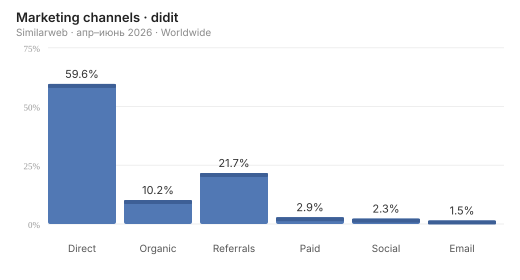
Доля трафика = сколько посетителей из страны. «Ушли сразу» = % тех, кто закрыл сайт на первой странице.
| Страна | Доля трафика | Ушли сразу |
|---|---|---|
| United States | 19,5% | 13,5% |
| Brazil | 9,3% | 25,4% |
| India | 5,5% | 27,6% |
| Bangladesh | 4,3% | 33,7% |
| Argentina | 3,8% | 61,7% |
Это компании, которые уже пользуются сервисом (по данным о переходах). Доля = сколько такого трафика приходит с этого сайта.
| # | Домен | Доля | Бизнес |
|---|---|---|---|
| 1 | beenverified.com | 24,8% | records |
| 2 | app.feetfinder.com | 13,6% | adult |
| 3 | wiapy.com | 9,8% | records |
| 4 | somoslank.com | 6,3% | контент |
| 5 | promptchan.com | 5,8% | AI/adult |
| 6 | dashboard.lowify.com.br | 5,3% | финтех BR |
| 7 | starpets.gg | 3,8% | gaming |
| 8 | epicsweep.us | 2,6% | sweepstakes |
| 9 | app.bit2me.com | 2,5% | crypto |
| 10 | electronicsbuyer.gg | 2,0% | gaming |
По каким словам их находят в поиске без рекламы:
За какие слова платят в Google (часто — названия конкурентов):
Объявлений в Google (Transparency Center, 13.07): ~300 вариантов рекламы.
На сайтах каких сфер встроена их проверка (по переходам-referral):
Из каких соцсетей приходят посетители на сайт:
Пол и возраст реальных посетителей сайта (Similarweb, 3 мес):
Дёшево ($0,33 за проверку) и удобно для разработчиков — прямой конкурент нашему test2. Их клиенты: сайты проверки людей, adult и игры, а не банки СНГ.
→ следующий слайд: скриншоты Similarweb (search, referrals, geo)
Similarweb · didit.me · апр–июнь 2026 · Worldwide
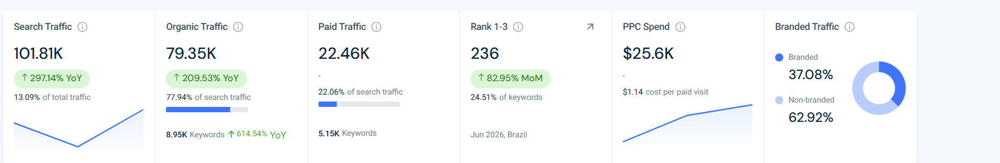
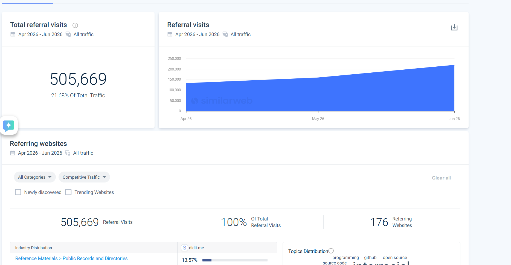
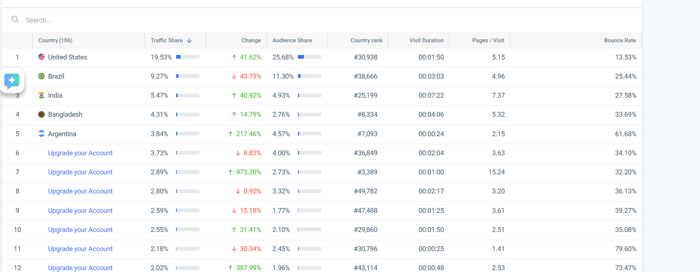
Similarweb dossier · shuftipro.com · апр–июнь 2026
729K визитов / 3 мес · Mobile 66% · Desktop 34% · Geo: UK #1 · 15% branded · 85% non-branded · Search +67% YoY · PPC $7,6K (+830%)
76% direct — UK/APAC brand
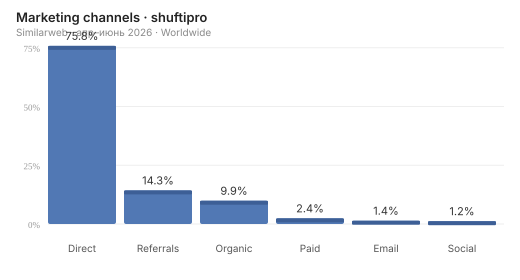
Доля трафика = сколько посетителей из страны. «Ушли сразу» = % тех, кто закрыл сайт на первой странице.
| Страна | Доля трафика | Ушли сразу |
|---|---|---|
| United States | 10,9% | 78,6% |
| United Kingdom | 9,3% | 60,3% |
| Brazil | 5,2% | 46,7% |
| Pakistan | 4,5% | 18,4% |
| Germany | 4,1% | 39,0% |
Это компании, которые уже пользуются сервисом (по данным о переходах). Доля = сколько такого трафика приходит с этого сайта.
| # | Домен | Доля | Бизнес |
|---|---|---|---|
| 1 | hypedrop.com | топ-1 | gaming/кейсы |
| 2 | csgoroll.com | 2 | gaming/gambling |
| 3 | u7buy.com | 3 | gaming |
| 4 | rewarble.com | 4 | гифт-карты |
| 5 | zumo.us | 5 | crypto |
| 6 | useme.com | 6 | фриланс |
| 7 | coinz.us | 7 | crypto |
| 8 | bet-at-home.de | 8 | беттинг DE |
| 9 | casino.click | 9 | казино |
| 10 | betwhale.ag | 10 | беттинг |
По каким словам их находят в поиске без рекламы:
За какие слова платят в Google (часто — названия конкурентов):
Объявлений в Google (Transparency Center, 13.07): ~900 вариантов рекламы.
На сайтах каких сфер встроена их проверка (по переходам-referral):
Из каких соцсетей приходят посетители на сайт:
Пол и возраст реальных посетителей сайта (Similarweb, 3 мес):
Средний по размеру бренд из Великобритании. Рекламируется по названиям конкурентов (Sumsub, Yoti). Трафик клиентов — в основном игровые сайты.
→ следующий слайд: скриншоты Similarweb (search, referrals, geo)
Similarweb · shuftipro.com · апр–июнь 2026 · Worldwide
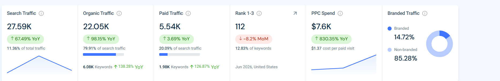
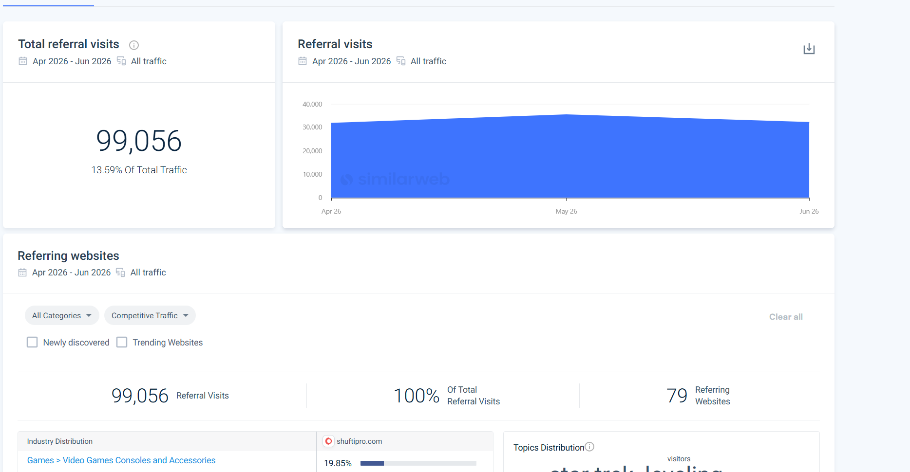
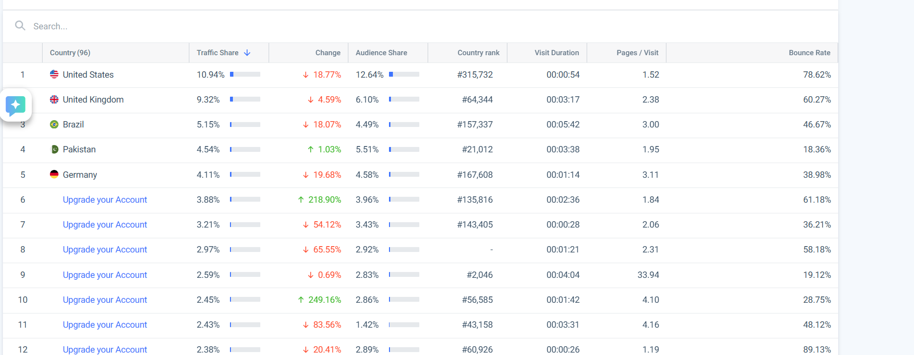
Similarweb dossier · veriff.com · апр–июнь 2026
1,995 млн визитов / 3 мес · Mobile 67% · Desktop 33% · Geo: US #1
2023 ≈ 2M — стабилен 3 года · referral 33%
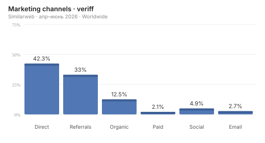
Доля трафика = сколько посетителей из страны. «Ушли сразу» = % тех, кто закрыл сайт на первой странице.
| Страна | Доля трафика | Ушли сразу |
|---|---|---|
| United States | 38,2% | 82,9% |
| United Kingdom | 9,4% | 61,3% |
| Canada | 6,9% | 45,1% |
| India | 3,6% | 66,0% |
| Mexico | 2,5% | 52,4% |
Это компании, которые уже пользуются сервисом (по данным о переходах). Доля = сколько такого трафика приходит с этого сайта.
| # | Домен | Доля | Бизнес |
|---|---|---|---|
| 1 | veriff.me | 14,0% | свой виджет |
| 2 | app.alpha-futures.com | 13,9% | трейдинг |
| 3 | earnhaus.com | 10,6% | инвестиции |
| 4 | worldpackers.com | 8,2% | travel |
| 5 | bangcoins.com | 5,6% | crypto |
| 6 | mycashery.com | 3,8% | финтех |
| 7 | bigshotgames.com | 2,4% | gaming |
| 8 | launchpadjv.com | 2,4% | JV |
| 9 | app.nekohealth.com | 2,4% | healthtech |
| 10 | stake.us | 2,1% | iGaming US |
По каким словам их находят в поиске без рекламы:
За какие слова платят в Google (часто — названия конкурентов):
Объявлений в Google (Transparency Center, 13.07): ~700 вариантов рекламы.
На сайтах каких сфер встроена их проверка (по переходам-referral):
Из каких соцсетей приходят посетители на сайт:
Пол и возраст реальных посетителей сайта (Similarweb, 3 мес):
Треть трафика — с сайтов клиентов, где встроен их сервис. Много «вирусного» трафика с игрушки «угадай возраст», но это не покупатели. Лидер по отзывам на G2.
→ следующий слайд: скриншоты Similarweb (search, referrals, geo)
Similarweb · veriff.com · апр–июнь 2026 · Worldwide
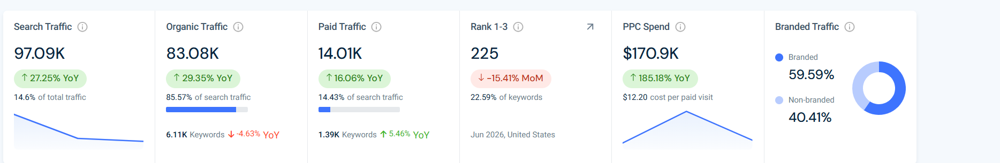
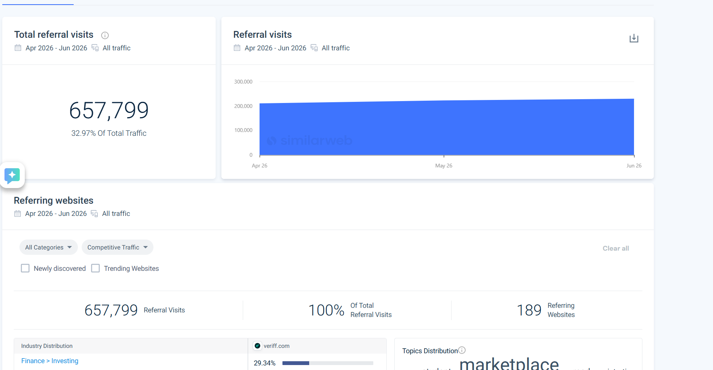
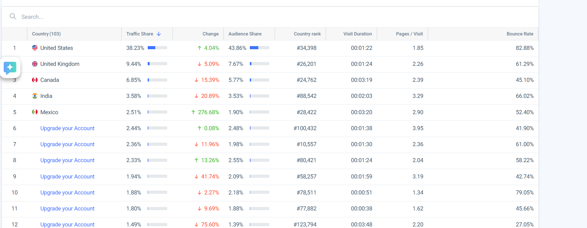
Similarweb dossier · sumsub.com · апр–июнь 2026
5,91 млн визитов / 3 мес · Mobile 69% · Desktop 31% · Geo: US #1
#1 трафик · 4000+ клиентов · Direct+Email 78%
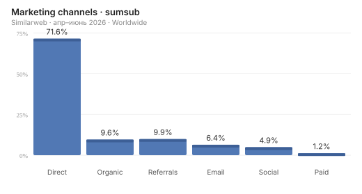
Доля трафика = сколько посетителей из страны. «Ушли сразу» = % тех, кто закрыл сайт на первой странице.
| Страна | Доля трафика | Ушли сразу |
|---|---|---|
| United States | 21,0% | 33,2% |
| United Kingdom | 5,2% | 54,2% |
| Russia | 4,1% | 63,6% |
| Germany | 3,3% | 29,3% |
| India | 3,1% | 40,0% |
Это компании, которые уже пользуются сервисом (по данным о переходах). Доля = сколько такого трафика приходит с этого сайта.
| # | Домен | Доля | Бизнес |
|---|---|---|---|
| 1 | mp.dogpay.com | 19,6% | crypto-платежи |
| 2 | stake.mx | 8,9% | iGaming |
| 3 | csgogem.com | 4,4% | gaming |
| 4 | api.digitallocker.gov.in | 3,0% | гос. Индия |
| 5 | neobet.de | 2,7% | ставки |
| 6 | lumiproxy.com | 2,7% | infra |
| 7 | swapd.co | 2,0% | marketplace |
| 8 | fragment.com | 2,0% | NFT/TG |
| 9 | whop.com | 2,0% | digital |
| 10 | casehug.com | 1,9% | gaming |
По каким словам их находят в поиске без рекламы:
За какие слова платят в Google (часто — названия конкурентов):
Объявлений в Google (Transparency Center, 13.07): ~600 вариантов рекламы.
На сайтах каких сфер встроена их проверка (по переходам-referral):
Из каких соцсетей приходят посетители на сайт:
Пол и возраст реальных посетителей сайта (Similarweb, 3 мес):
Машина бренда и контента: ~170 реклам в Meta, программа партнёров (400+ интеграторов). Сильнее всех «дожимают» клиента до покупки.
→ следующий слайд: скриншоты Similarweb (search, referrals, geo)
Similarweb · sumsub.com · апр–июнь 2026 · Worldwide
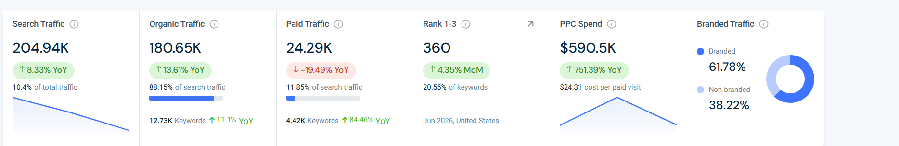
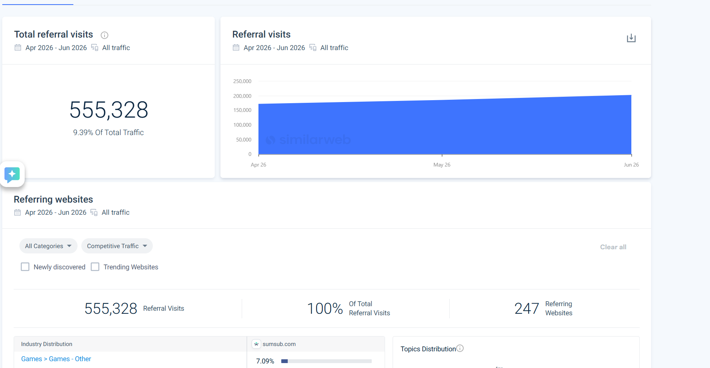
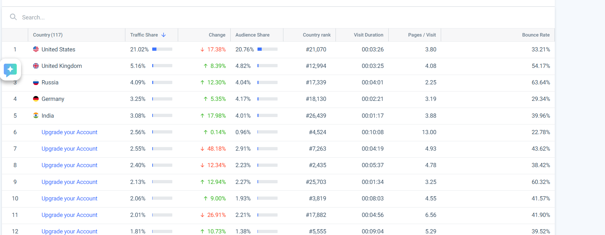
Similarweb dossier · ondato.com · апр–июнь 2026
4,0 млн визитов / 3 мес · Mobile 84% · Desktop 16% · Geo: US #1 · 22% branded · Search +479% YoY
№2 traffic · «37% social» = embed adult
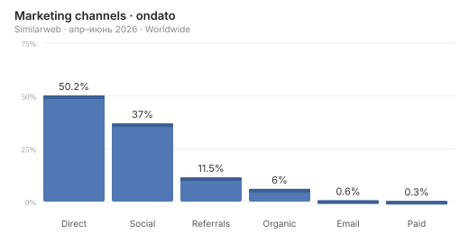
Доля трафика = сколько посетителей из страны. «Ушли сразу» = % тех, кто закрыл сайт на первой странице.
| Страна | Доля трафика | Ушли сразу |
|---|---|---|
| United States | 44,7% | 14,9% |
| United Kingdom | 11,7% | 30,2% |
| Germany | 6,3% | 30,3% |
| Australia | 5,6% | 20,9% |
| Brazil | 2,3% | 11,0% |
Это компании, которые уже пользуются сервисом (по данным о переходах). Доля = сколько такого трафика приходит с этого сайта.
| # | Домен | Доля | Бизнес |
|---|---|---|---|
| 1 | fansly.com | топ-1 | adult-платформа |
| 2 | eldorado.gg | 2 | gaming market |
| 3 | fanvue.com | 3 | adult/creators |
| 4 | app.foxy.ai | 4 | AI/adult |
| 5 | loyalfans.com | 5 | adult |
| 6 | myfreecams.com | 6 | adult stream |
| 7 | bo.inside.finsei.com | 7 | финтех |
| 8 | tastyslips.com | 8 | adult |
| 9 | paraiska.bigbank.lt | 9 | банк LT |
| 10 | public69.com | 10 | adult |
По каким словам их находят в поиске без рекламы:
За какие слова платят в Google (часто — названия конкурентов):
Объявлений в Google (Transparency Center, 13.07): 57 вариантов рекламы.
На сайтах каких сфер встроена их проверка (по переходам-referral):
Из каких соцсетей приходят посетители на сайт:
Пол и возраст реальных посетителей сайта (Similarweb, 3 мес):
Ниша — проверка возраста для adult-платформ. 78% поиска приходит не по названию бренда, а по общим запросам.
→ следующий слайд: скриншоты Similarweb (search, referrals, geo)
Similarweb · ondato.com · апр–июнь 2026 · Worldwide
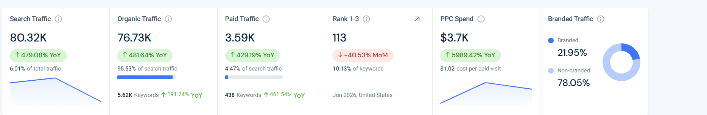
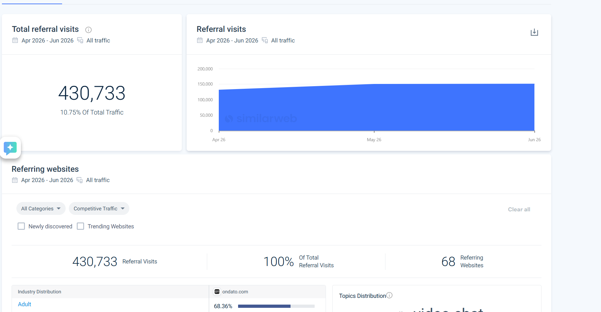
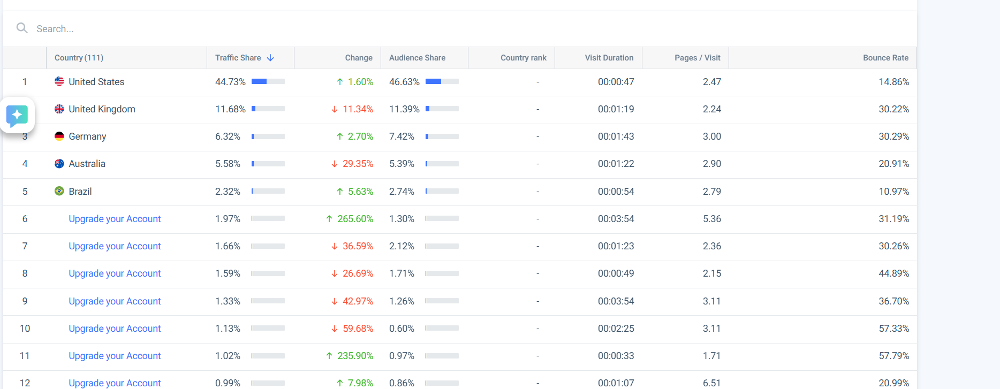
Similarweb dossier · incode.com · апр–июнь 2026
2,35 млн визитов / 3 мес · Mobile 86% · Desktop 14% · Geo: Brazil #1 · 35% branded · 65% non-branded · Search 52,7K (+21% YoY) · Paid +310% ключей
84% direct — LATAM brand
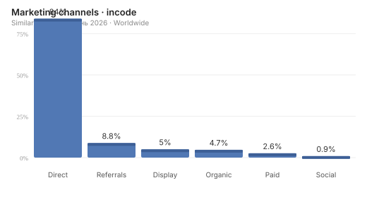
Доля трафика = сколько посетителей из страны. «Ушли сразу» = % тех, кто закрыл сайт на первой странице.
| Страна | Доля трафика | Ушли сразу |
|---|---|---|
| Brazil | 60,6% | 67,3% |
| United States | 14,5% | 50,4% |
| Romania | 3,4% | 72,1% |
| Netherlands | 2,4% | 62,8% |
| Bosnia | 2,3% | 81,8% |
Это компании, которые уже пользуются сервисом (по данным о переходах). Доля = сколько такого трафика приходит с этого сайта.
| # | Домен | Доля | Бизнес |
|---|---|---|---|
| 1 | br.skokka.com | 44,6% | adult-объявления |
| 2 | spankbang.com | 18,9% | adult |
| 3 | trip.numastays.com | 9,3% | travel/отели |
| 4 | register.arise.com | 5,7% | BPO/работа |
| 5 | mystay.loregroup.com | 0,8% | отели |
| 6 | xbizmiami.com | 0,7% | adult-индустрия |
| 7 | account.ladies.de | 0,3% | adult |
| 8 | itinerary.alliants.app | 0,1% | travel |
| 9 | 32rosu.ro | 0,05% | беттинг RO |
| 10 | 32red.com | 0,03% | казино UK |
По каким словам их находят в поиске без рекламы:
За какие слова платят в Google (часто — названия конкурентов):
Объявлений в Google (Transparency Center, 13.07): ~300 вариантов рекламы.
На сайтах каких сфер встроена их проверка (по переходам-referral):
Из каких соцсетей приходят посетители на сайт:
Пол и возраст реальных посетителей сайта (Similarweb, 3 мес):
Больше всех тратят на рекламу в Google. Несмотря на имидж «для корпораций Латинской Америки», 65% трафика клиентов — adult-сайты.
→ следующий слайд: скриншоты Similarweb (referrals, geo)
Similarweb · incode.com · апр–июнь 2026 · Worldwide
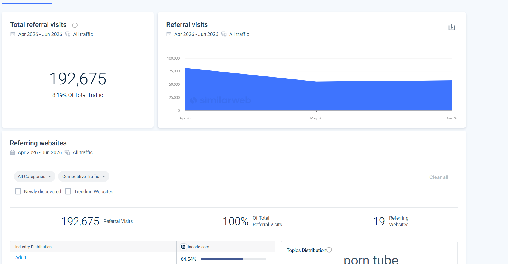
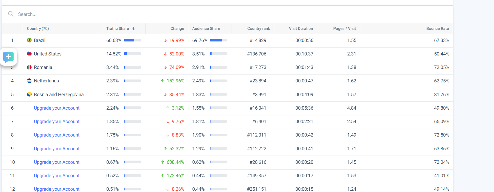
Similarweb dossier · idenfy.com · апр–июнь 2026
1,43 млн визитов / 3 мес · Mobile 70% · Desktop 30% · Geo: US #1 · 44% branded
4,9★ G2 · branded 44%
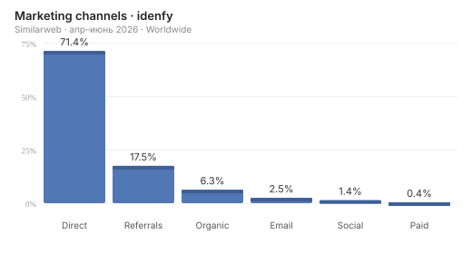
Доля трафика = сколько посетителей из страны. «Ушли сразу» = % тех, кто закрыл сайт на первой странице.
| Страна | Доля трафика | Ушли сразу |
|---|---|---|
| United States | 15,7% | 16,8% |
| Portugal | 6,0% | 66,2% |
| Germany | 4,9% | 16,5% |
| India | 4,6% | 21,0% |
| Indonesia | 4,1% | 42,6% |
Это компании, которые уже пользуются сервисом (по данным о переходах). Доля = сколько такого трафика приходит с этого сайта.
| # | Домен | Доля | Бизнес |
|---|---|---|---|
| 1 | hetzner.com | 44,6% | hosting* |
| 2 | gameboost.com | 14,8% | gaming |
| 3 | topsport.lt | 13,7% | букмекер LT |
| 4 | cellar.eros.com | 6,3% | adult |
| 5 | app.clickup.com | 4,2% | SaaS |
| 6 | app.dataimpulse.com | 2,8% | proxy |
| 7 | primebiometry.com | 2,4% | biometric |
| 8 | cryptovoucher.io | 0,4% | crypto |
По каким словам их находят в поиске без рекламы:
За какие слова платят в Google (часто — названия конкурентов):
Объявлений в Google (Transparency Center, 13.07): 49 вариантов рекламы.
На сайтах каких сфер встроена их проверка (по переходам-referral):
Из каких соцсетей приходят посетители на сайт:
Пол и возраст реальных посетителей сайта (Similarweb, 3 мес):
Известный бренд среди букмекеров: 71% заходят напрямую. Берут деньги только за одобренную проверку.
→ следующий слайд: скриншоты Similarweb (search, referrals, geo)
Similarweb · idenfy.com · апр–июнь 2026 · Worldwide
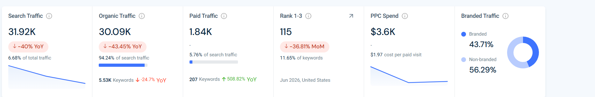
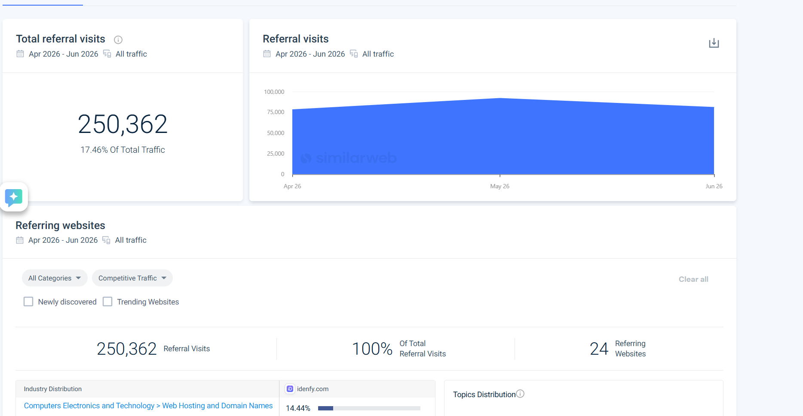
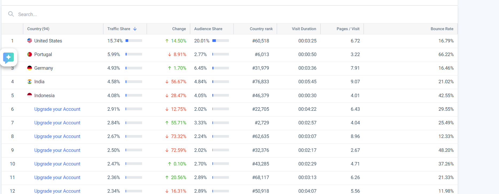
Similarweb dossier · complycube.com · апр–июнь 2026
240K визитов / 3 мес · Mobile 77% · Desktop 23% · Geo: UK #1 · 38% branded · Search 12,96K · Organic +492% YoY · Paid 1,6%
34% referral channel · SMB embed
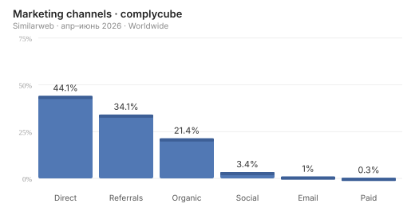
Доля трафика = сколько посетителей из страны. «Ушли сразу» = % тех, кто закрыл сайт на первой странице.
| Страна | Доля трафика | Ушли сразу |
|---|---|---|
| United Kingdom | 15,7% | 66,4% |
| United States | 13,5% | 61,0% |
| Saudi Arabia | 9,3% | 90,1% |
| Pakistan | 5,4% | 15,0% |
| Germany | 5,3% | 49,2% |
Это компании, которые уже пользуются сервисом (по данным о переходах). Доля = сколько такого трафика приходит с этого сайта.
| # | Домен | Доля | Бизнес |
|---|---|---|---|
| 1 | webapp.blincref.com | 37,0% | недвижимость |
У ComplyCube всего 2 сайта-источника (webapp.blincref.com, недвижимость). Публичного «встроенного» следа почти нет — маленький SMB-игрок.
По каким словам их находят в поиске без рекламы:
За какие слова платят в Google (часто — названия конкурентов):
Объявлений в Google (Transparency Center, 13.07): 40 вариантов рекламы.
На сайтах каких сфер встроена их проверка (по переходам-referral):
Из каких соцсетей приходят посетители на сайт:
Similarweb не рассчитывает пол/возраст для этого сайта — недостаточно трафика для демографии.
Быстрее всех растут в бесплатном поиске. Вход $99/мес. По размеру — наш сегмент.
→ следующий слайд: скриншоты Similarweb (referrals, geo)
Similarweb · complycube.com · апр–июнь 2026 · Worldwide
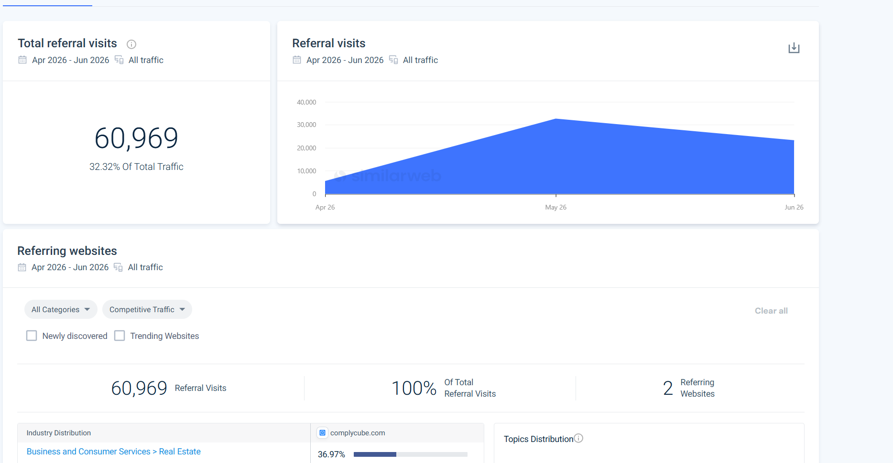
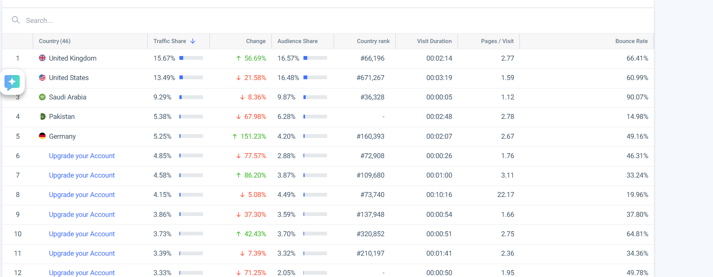
Similarweb dossier · jumio.com · апр–июнь 2026
673K визитов / 3 мес · Mobile 85% · Desktop 15% · Geo: US #1 · 70% branded · Search 91,9K (41% трафика) · Organic −55% ключей / Paid +129%
Enterprise SEO legacy · органика падает, реклама растёт
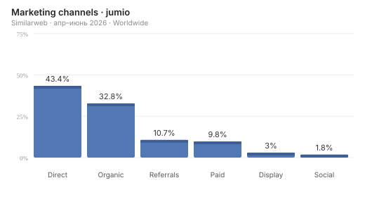
Доля трафика = сколько посетителей из страны. «Ушли сразу» = % тех, кто закрыл сайт на первой странице.
| Страна | Доля трафика | Ушли сразу |
|---|---|---|
| Thailand | 16,6% | 58,8% |
| Vietnam | 14,7% | 6,9% |
| United States | 12,2% | 63,6% |
| India | 6,5% | 19,9% |
| Brazil | 5,6% | 77,7% |
Это компании, которые уже пользуются сервисом (по данным о переходах). Доля = сколько такого трафика приходит с этого сайта.
| # | Домен | Доля | Бизнес |
|---|---|---|---|
| 1 | github.com | 8,6% | dev-платформа |
| 2 | en.wikipedia.org | 6,7% | справочник |
| 3 | instahyre.com | 5,9% | работа (IN) |
| 4 | app.asana.com | 4,4% | SaaS-таски |
| 5 | force.com | 2,2% | Salesforce |
| 6 | tickets.parisblockchainweek.com | 0,5% | событие |
| 7 | login.outreach.io | 0,05% | sales SaaS |
У Jumio 71% referral-трафика — из скрытых источников, а видимые ссылки (github, wikipedia, asana) — это упоминания/корпоративные инструменты, а не сайты со встроенной проверкой. Значит Jumio продаёт крупным клиентам напрямую, а не через embed.
По каким словам их находят в поиске без рекламы:
За какие слова платят в Google (часто — названия конкурентов):
Объявлений в Google (Transparency Center, 13.07): ~200 вариантов рекламы.
На сайтах каких сфер встроена их проверка (по переходам-referral):
Из каких соцсетей приходят посетители на сайт:
Пол и возраст реальных посетителей сайта (Similarweb, 3 мес):
Делают ставку на статьи и поиск. Клиентского трафика меньше (11%), чем у Veriff (33%) — продают крупным корпорациям долгим циклом.
→ следующий слайд: скриншоты Similarweb (referrals, geo)
Similarweb · jumio.com · апр–июнь 2026 · Worldwide
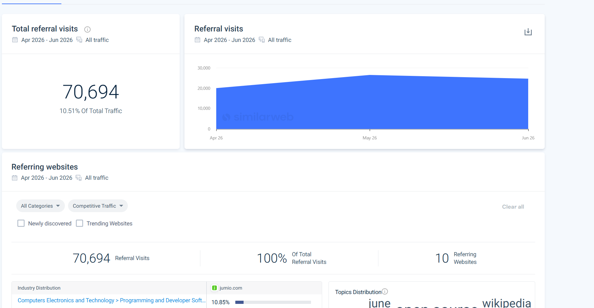
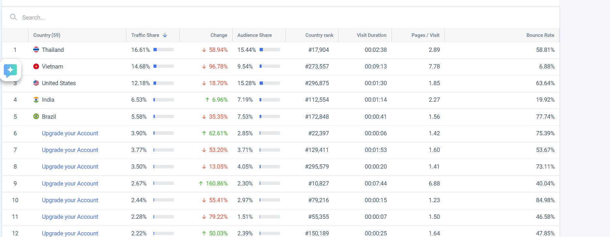
Similarweb dossier · regulaforensics.com · апр–июнь 2026
532K визитов / 3 мес · Mobile 48% · Desktop 52% · Geo: Ukraine #1 · 7% branded · 93% non-branded · Search +13% YoY · PPC $2,2K
Forensic niche · desktop 52%
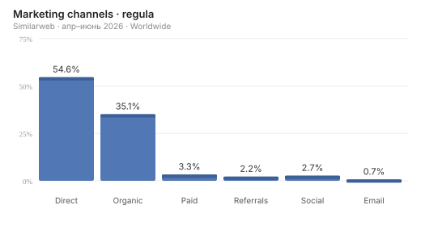
Доля трафика = сколько посетителей из страны. «Ушли сразу» = % тех, кто закрыл сайт на первой странице.
| Страна | Доля трафика | Ушли сразу |
|---|---|---|
| United States | 11,1% | 70,8% |
| Ukraine | 6,9% | 63,4% |
| Belarus | 4,4% | 26,0% |
| Canada | 3,6% | 72,0% |
| India | 2,8% | 50,2% |
Это компании, которые уже пользуются сервисом (по данным о переходах). Доля = сколько такого трафика приходит с этого сайта.
| # | Домен | Доля | Бизнес |
|---|---|---|---|
| 1 | pub.dev | 2,8% | dev-пакеты |
| 2 | app.clickup.com | 2,1% | SaaS |
| 3 | url-opener.com | 1,6% | утилита |
| 4 | initsogmbh.atlassian.net | 0,1% | dev/интегратор |
| 5 | hub.docker.com | 0,1% | dev-образы |
| 6 | finextra.com | 0,02% | финтех-СМИ |
У Regula referral почти нет (11,6K визитов, 93% скрыто). Видимые ссылки — dev-инструменты (pub.dev, docker) и финтех-СМИ. Модель — прямые продажи в enterprise и госсектор, без встроенного потребительского потока.
По каким словам их находят в поиске без рекламы:
За какие слова платят в Google (часто — названия конкурентов):
Объявлений в Google (Transparency Center, 13.07): ~600 вариантов рекламы.
На сайтах каких сфер встроена их проверка (по переходам-referral):
Из каких соцсетей приходят посетители на сайт:
Пол и возраст реальных посетителей сайта (Similarweb, 3 мес):
35% трафика — из бесплатного поиска по темам документов и разработки. Смежный игрок (экспертиза документов).
→ следующий слайд: скриншоты Similarweb (search, referrals, geo)
Similarweb · regulaforensics.com · апр–июнь 2026 · Worldwide
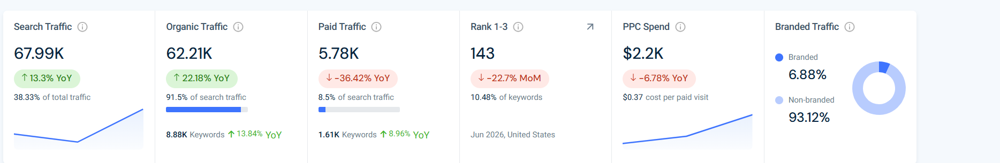
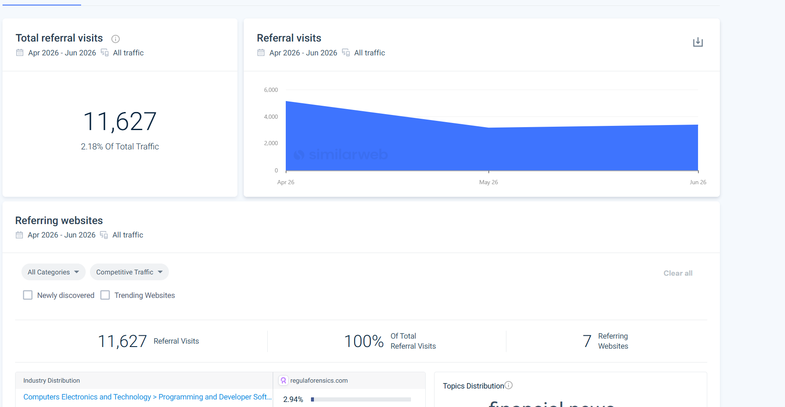
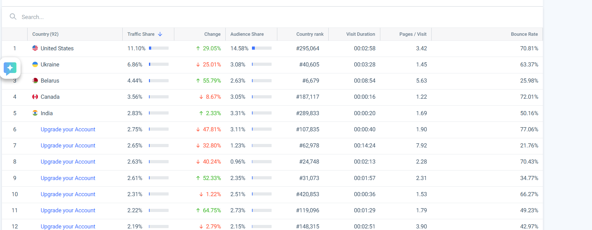
Similarweb dossier · withpersona.com · апр–июнь 2026
46,3 млн* визитов / 3 мес · Mobile 87% · Desktop 13% · Geo: US #1 · 75% branded · 25% non-branded · Search +95% YoY · PPC $864K/qtr
*Widget inflation — не сравнивать 1:1 по visits
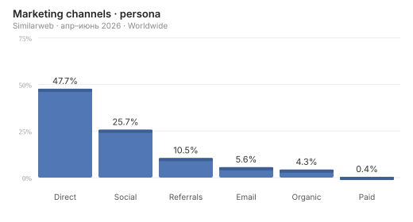
Доля трафика = сколько посетителей из страны. «Ушли сразу» = % тех, кто закрыл сайт на первой странице.
| Страна | Доля трафика | Ушли сразу |
|---|---|---|
| United States | 23,0% | 52,8% |
| Indonesia | 11,3% | 31,8% |
| United Kingdom | 5,3% | 72,0% |
| Philippines | 5,0% | 65,3% |
| Brazil | 4,8% | 69,4% |
Это компании, которые уже пользуются сервисом (по данным о переходах). Доля = сколько такого трафика приходит с этого сайта.
| # | Домен | Доля | Бизнес |
|---|---|---|---|
| 1 | kaggle.com | топ-1 | data science (Google) |
| 2 | roblox.com | 2 | игры |
| 3 | digilocker.signzy.tech | 3 | KYC Индия |
| 4 | contra.com | 4 | фриланс |
| 5 | dashboard.retellai.com | 5 | AI |
| 6 | dashboard.twitch.tv | 6 | стриминг (Amazon) |
| 7 | indiecampers.com | 7 | travel |
| 8 | platform.openai.com | 8 | OpenAI |
| 9 | ashleymadison.com | 9 | dating/adult |
| 10 | playboy.com | 10 | adult |
У Persona 225 сайтов-клиентов — самый широкий охват. Среди них big-tech и AI: OpenAI, Roblox, Twitch, Kaggle. Сильнейший embed-роутер на рынке.
По каким словам их находят в поиске без рекламы:
За какие слова платят в Google (часто — названия конкурентов):
Объявлений в Google (Transparency Center, 13.07): ~400 вариантов рекламы.
На сайтах каких сфер встроена их проверка (по переходам-referral):
Из каких соцсетей приходят посетители на сайт:
Пол и возраст реальных посетителей сайта (Similarweb, 3 мес):
Сильно вырос бренд: 75% ищут по названию (в 2023 было 17%). Много платной рекламы + огромный встроенный трафик с сайтов клиентов.
→ следующий слайд: скриншоты Similarweb (search, referrals, geo)
Similarweb · withpersona.com · апр–июнь 2026 · Worldwide
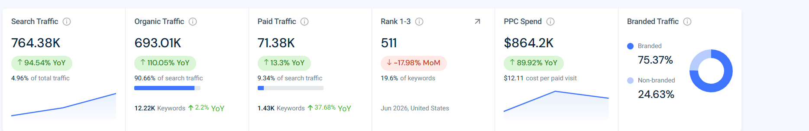
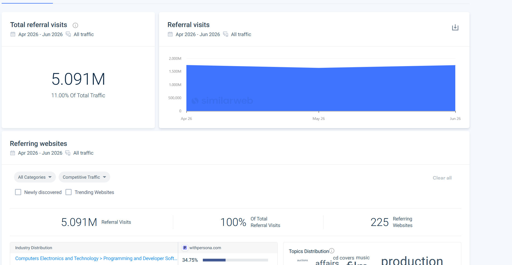
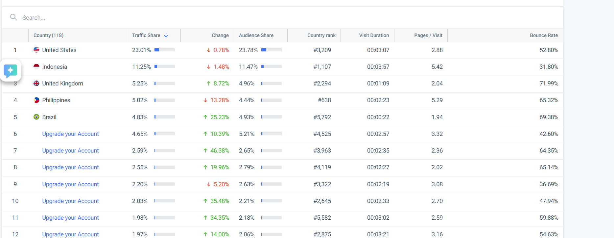
← → · прокрутка · 1 / 11